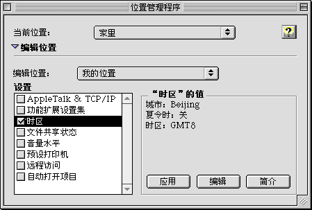

|
|

|
Mac OS 8.1S 中的新功能
Mac OS 8.1S 最新功能介绍
|
Mac OS 扩充格式
Mac OS 扩充磁盘格式（也称作“HFS Plus”）大大地提高了较大硬盘宗卷的工作效率。
|
通用磁盘格式（UDF）支持
有了 UDF 支持，所有苹果牌及兼容的内置只读 DVD 驱动器便可读取 UDF 格式的只读光盘和只读 DVD 光盘。
DVD 光盘看上去象只读光盘，但是 DVD 光盘更快、所载信息量也更多（可达到 17 GB）。
UDF 支持可在任何带有 PowerPC 处理器并安装了 Mac OS 8.1S 的基于 Mac OS 的计算机上工作。
|
PC Exchange 的功能增强
PC Exchange CH-2.2 增加可用的“Windows”磁盘选项和格式。
您可使用的文件名长度可达 255 个（英文）字符（Win95 的长文件名），在 Mac OS 上的可见长度为 31 个字符；装上用 FAT32 格式化的磁盘；并可建立、读、写、抹掉并推出为 Windows 格式化的 Zip 和 Jaz 磁盘。
|
苹果位置管理程序 CH-2.0
使用苹果“位置管理程序”CH-2.0（ALM），您可轻易地更改系统设置，使之与当前的任务或位置相匹配，或为不同的用户重新配置系统。

通过使用 ALM，您可获得文件共享、网络、打印、Internet 访问、声音以及其它的系统成份的设置并给予一个名称。当要使用某设置时，可在“ALM”控制板或“控制条”模组中选定它的名称。
要获取更多信息，请打开苹果“位置管理程序”CH-2.0 控制板，再点按“辅助”按钮。
|
主菜单|
返回
- © 1997 Apple Computer, Inc. All rights reserved.
- © 1997 苹果电脑国际有限公司，版权所有。
|